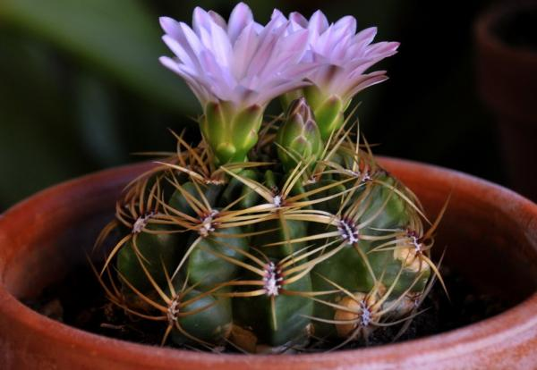
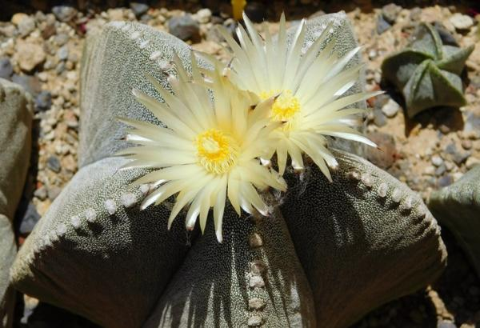
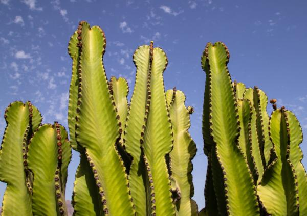
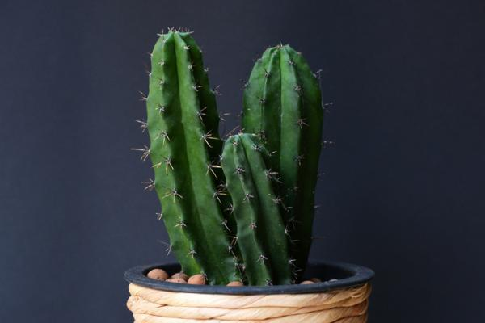
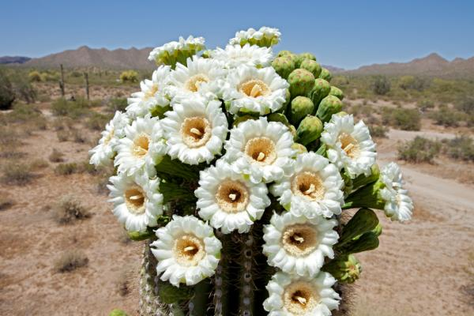

| Nombre | Imagen | Descripción |
|---|---|---|
| Gymnocalycium |  | Se trata de cactus pequeños de interior que pueden alcanzar entre 10 y 13 centímetros de altura, por lo que estará bien en exterior en un entorno adecuado pero también puede cultivarse en macetas para tenerlo en interior con las condiciones ambientales que precisa |
| Astrophytum myriostigma |  | popularmente conocido como el bonete de obispo, y por ello es uno de los más apreciados por los coleccionistas. |
| Euphorbia ingens |  | popularmente conocido como el bonete de obispo, y por ello es uno de los más apreciados por los coleccionistas. |
| Cereus Peruvianus |  | Se trata de un cactus columnar ramificado que crece muy rápido e incluso puede llegar a los 10 metros de altura. Su tono verde que puede ir a azulado, sus espinas marrones y sus vistosas flores blancas lo convierten en una especie muy particular. |
| Carnegiea gigantea |  | En climas desérticos y secos, como en los desiertos de México, nacen los saguaros, sahuaro, cactus columnares o Carnegiea gigantea. |